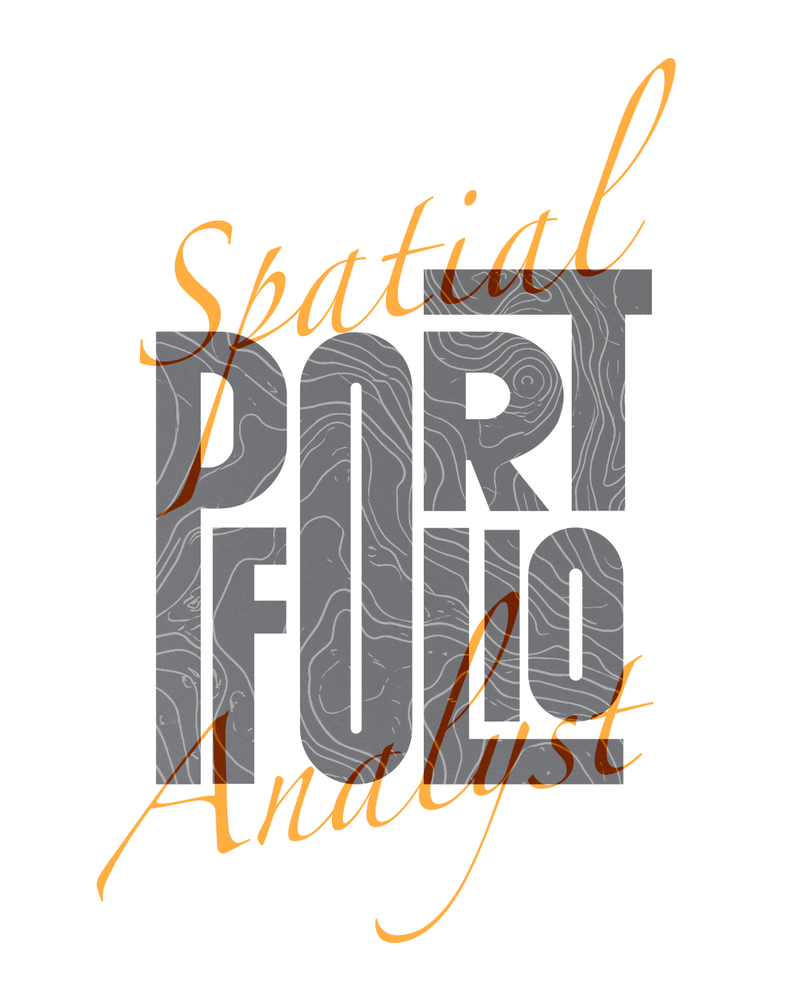

BUILT TO INSPIRE
UPDATED 2026
SPATIAL DATA ANALYST PORTFOLIO
MAPPING IS MY VISION.
DATA IS MY TOOL.
EXPLORING TERRITORIAL DYNAMICS & SPATIAL SOLUTIONS.
DATA IS MY TOOL.
EXPLORING TERRITORIAL DYNAMICS & SPATIAL SOLUTIONS.

GEOMATICS INNOVATOR.
GIS STRATEGIST.
ACADEMIC PORTFOLIO
GIS STRATEGIST.
ACADEMIC PORTFOLIO
✦ ABOUT ME
✦ ABOUT ME
KENZA ENNAHHAL
GEOMATICS & Territorial Management STUDENT
Undergraduate university student specializing in Geomatics, Territorial Management, and Spatial Data Analysis. My academic journey combines a solid foundation in environmental sciences with practical geographic methodologies. I utilize geographic information systems and spatial analysis tools to explore spatial patterns, understand environmental dynamics, and contribute to sustainable planning solutions.
Professional Ambitions: My professional goal is to grow as a GIS specialist and spatial data analyst, bridging the gap between geographical data and effective territorial decision-making. I aspire to engage in urban planning projects, environmental monitoring initiatives, and spatial infrastructure development, continuously expanding my skills in GIS environments, Python, and spatial data tools.
Professional Ambitions: My professional goal is to grow as a GIS specialist and spatial data analyst, bridging the gap between geographical data and effective territorial decision-making. I aspire to engage in urban planning projects, environmental monitoring initiatives, and spatial infrastructure development, continuously expanding my skills in GIS environments, Python, and spatial data tools.
🏛️ University
Hassan II University
🏛️ Faculty
FLSHB Ben M'Sick
🗺️ Major
Geography & GIS
🌐 Languages
Arabic • English • French
✦ GIS SENSORS
ACTIVE 3D SCAN
Featured GIS Projects
VIEW ALL PROJECTS ↗
Project #001 ✦
FLSHB ACADEMIC RESEARCH
GIS RESEARCH:
SOCIO-SPATIAL COMMUTES
Socio-spatial analysis of student commuting distances and technical GIS skills in FLSHB. Statistical correlation via Excel (=CORREL).

S5 Research
Commute Correlation
Project #002 ✦
Remote Sensing
SPATIAL MODELING:
ENVIRONMENTAL RISKS
Satellite image processing and land-use analysis using QGIS and Python. Predicting environmental dynamics and coastal risk factors for sustainable urban planning.

Raster Model
Remote Sensing
Project #003 ✦
Cartography & Layouts
SPATIAL DATA:
THEMATIC MAPPING
Custom layout design, attribute table optimization, and vector spatial queries for regional urban planning maps in ArcGIS Pro and QGIS.

Vector Analysis
Cartography
Technical Expertise & Workflow
Geospatial Analytical Workflow
01
Data Acquisition
Field surveys, satellite imagery, GPS, and open vector data collection.
02
Data Processing
Cleaning tables, coordinate alignment (CRS), and attribute query handling.
03
Spatial Analysis
Buffer modeling, Excel statistical correlations, and spatial overlay analysis.
04
Cartography
Designing high-resolution, interactive maps with Adobe Illustrator & QGIS.
Toolstack & Core Skills
ArcGIS Pro & Spatial Analyst
QGIS & Cartographic Layouts
Microsoft Excel Statistical Analysis
Microsoft Word (Academic Research & Field Reports)
Adobe Illustrator (Map Design)
Adobe Photoshop (Raster Layouts)
Academic Education
Bachelor in Geography — Geomatics & Territorial Management
Faculty of Letters and Human Sciences Ben M'Sick — Casablanca
Undergraduate Coursework in Biology & Geology (BG — Semesters S1 to S3)
Faculty of Sciences Ben M'Sick — Casablanca
Baccalaureate in Experimental Sciences (Life & Earth Sciences - SVT)
High School Education — Casablanca, Morocco
Certifications & Training